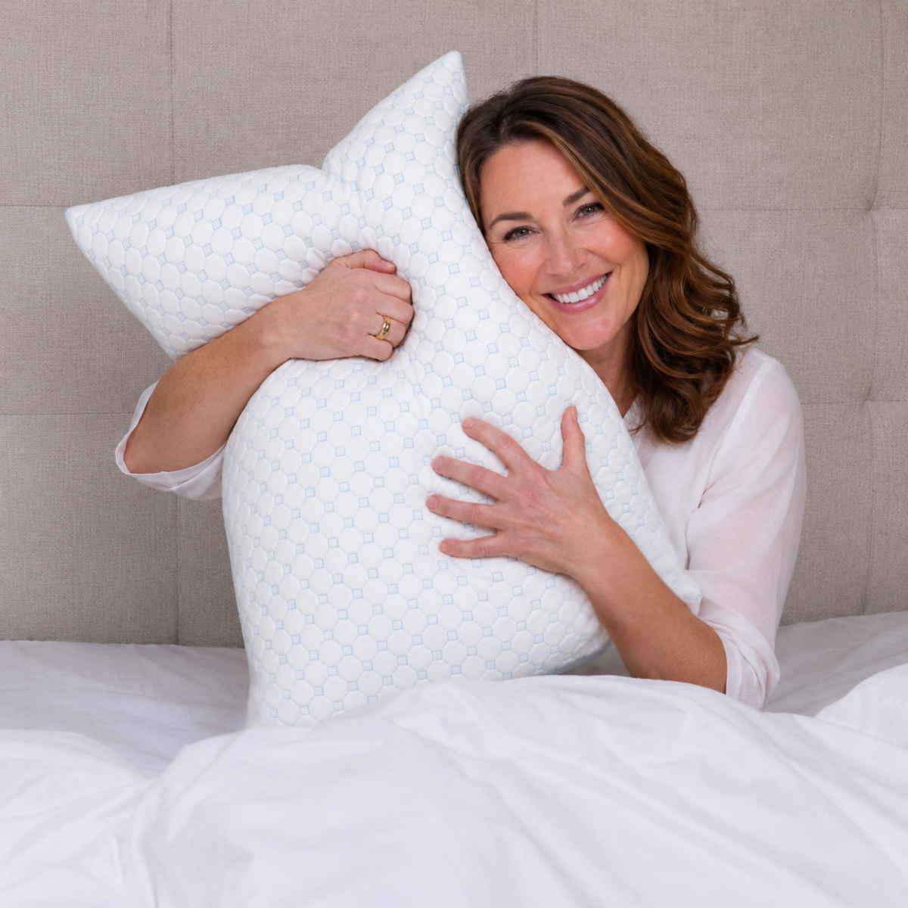
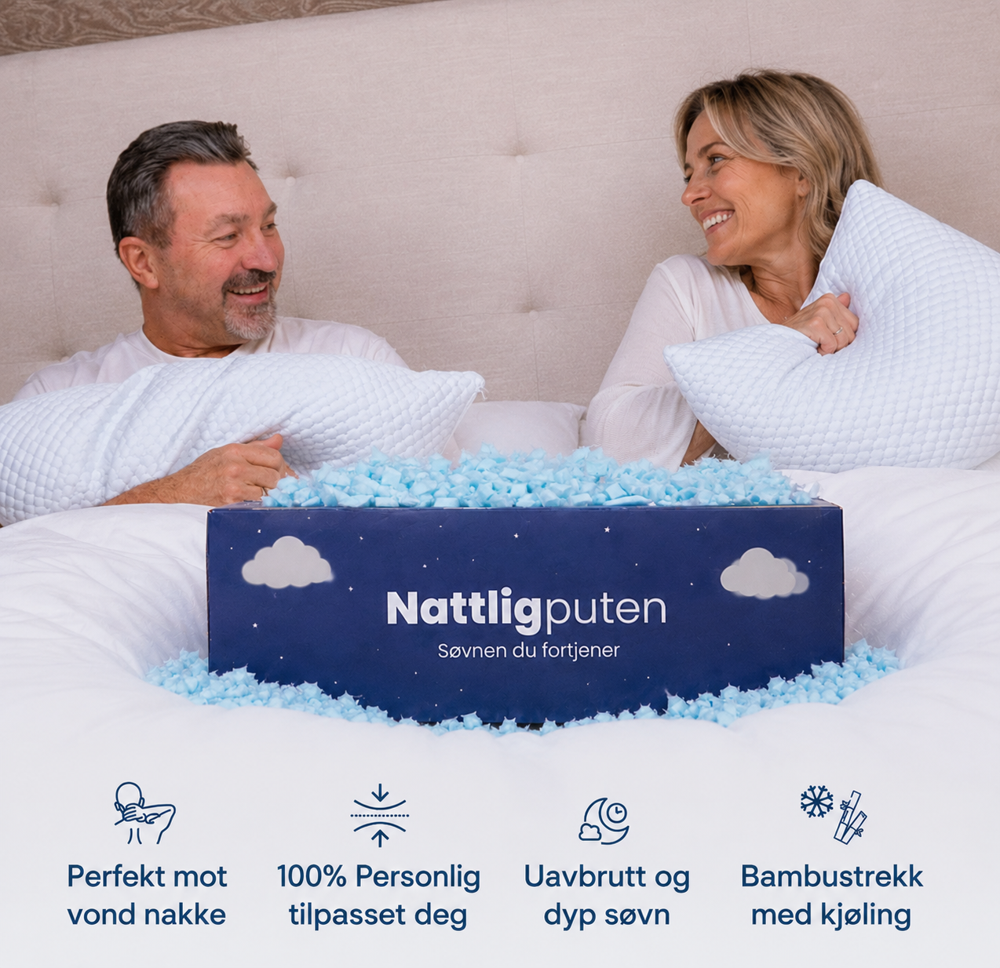
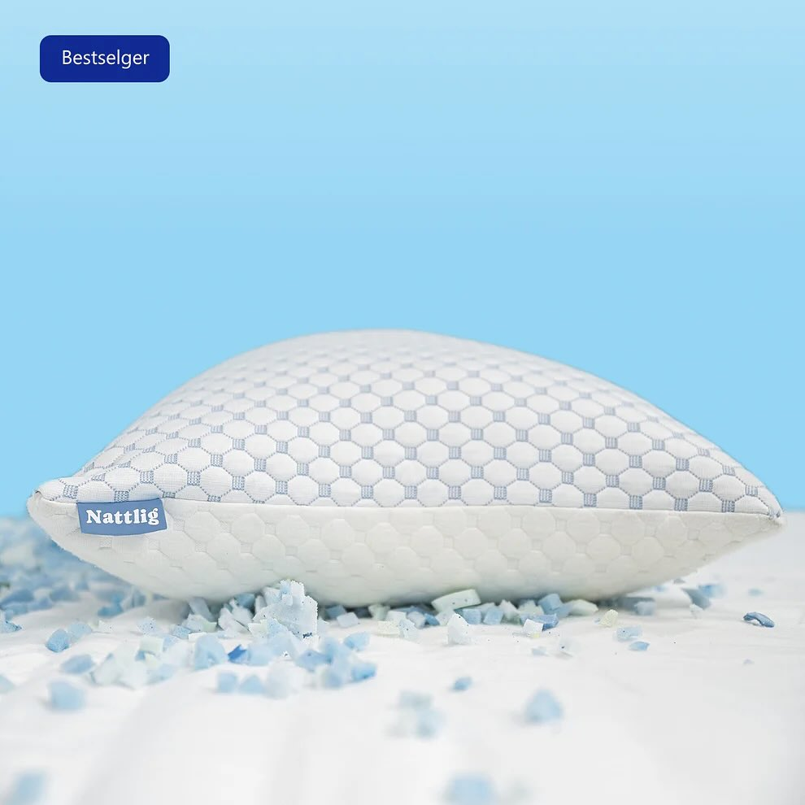
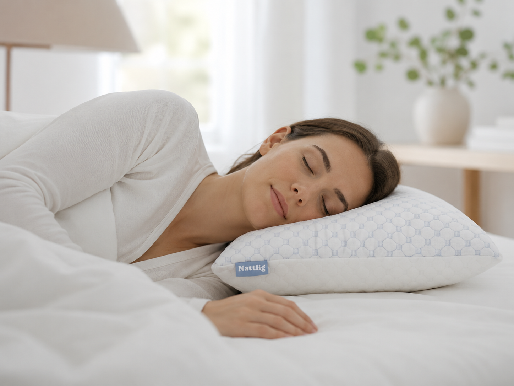
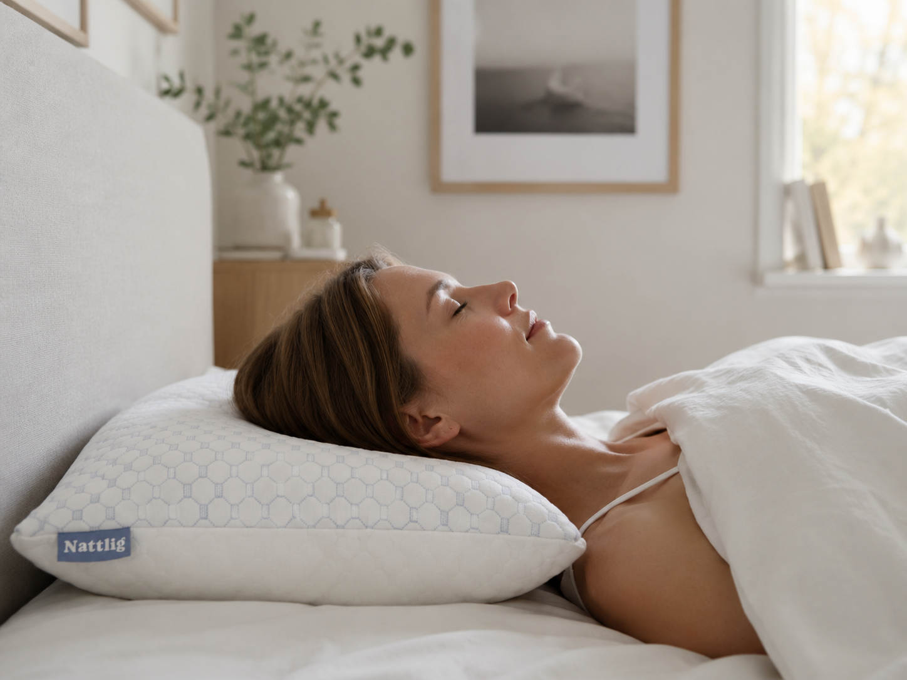
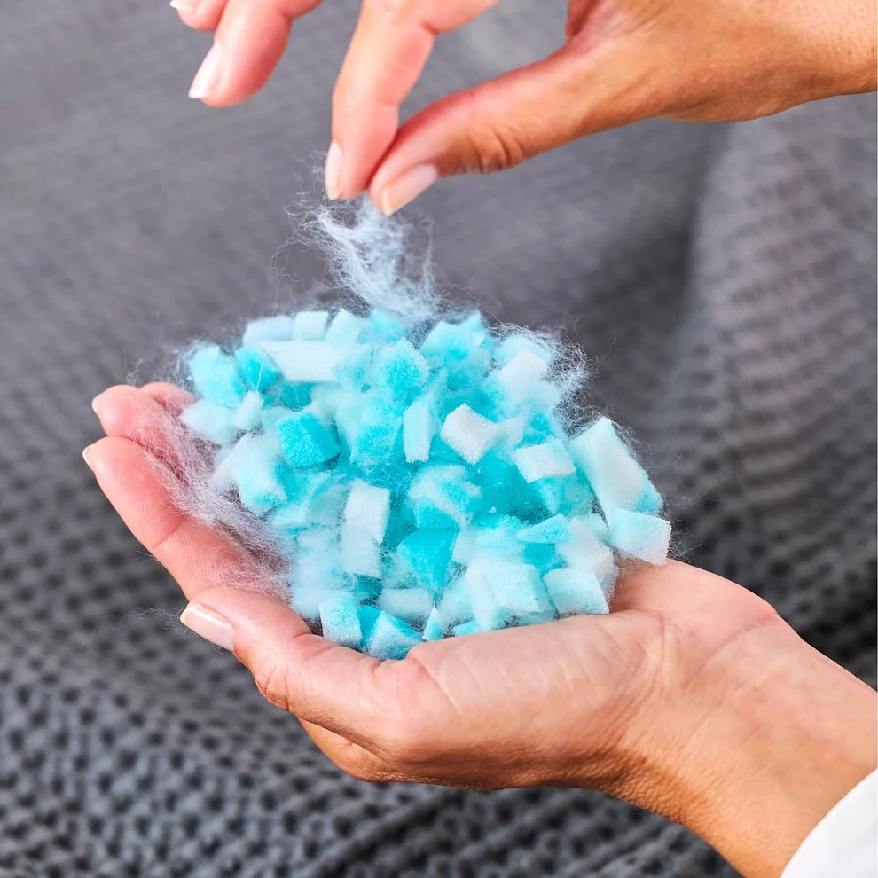

Nattlig-puten er fylt med minneskum. Du tar ut akkurat så mye du trenger — så høyden og fastheten passer DIN nakke, uansett om du sover på siden, rygg eller mage. Putevaret har en behagelig kjøligere side.

Verifiserte anmeldelser fra de første kundene.
"Den første puta jeg har kunnet stille inn selv. Tok ut en god del fyll så høyden ble riktig for sidesoving — og endelig våkner jeg uten stiv nakke."
"Jeg har prøvd 6 puter på 3 år. Tempur, IKEA, Coop. Denne er den første jeg ikke har sendt tilbake. Endelig en pute som passer min nakke, ikke omvendt."
"90 dager prøv hjemme — trengte ikke 90. Visste etter 3 netter. Jeg hadde aldri innsett hvor mye den gamle puta mi gjorde meg vondt."
Den gulnete dunpuden i skapet. Eller den polyester-puta du klemmer hver natt og lurer på om det er på tide å bytte.
Du sover på siden, men puta er for høy. Hodet kommer i feil vinkel. Stiv nakke om morgenen.
Du vrir deg på rygg, men nå er puta for hard. Du legger en arm under hodet for å kompensere.
Du stryker den, klemmer den, bretter den i to. Den er fortsatt feil.
Vanlige puter har én form. Én høyde. Én fasthet. Du må venne deg til den.

Nattlig-puten kommer fylt med minneskum. Du tar ut akkurat så mye du trenger — til høyden og fastheten passer DIN nakke.
Sidesover trenger mer fyll. Ryggsover mindre. Magesover minst. En pute. Tilpasses deg — ikke omvendt.
Putevaret har en kjøligere side. Behagelig svalere når du sover varmt — uten å være ekstrem.
Puten kommer full og fast med vilje. Det er meningen — du har mer drømmeskum enn du trenger, så du kan ta ut til puta passer DIN nakke. De fleste tar ut opp mot halvparten.
Velg det som ligner mest på deg — vi har laget en egen side for hver.
Du svetter, flipper puta, våkner gjennomvåt. Kjøligere putevar gjør natta enklere.
Les mer →Hetetokter ødelegger søvnen. Du trenger en pute som ikke gjør det verre.
Les mer →For høy. For lav. For hard. Du vrir deg natta lang. Stiv nakke neste morgen.
Les mer →

t.classList.remove('border-nattlig')); this.classList.add('border-nattlig')">
t.classList.remove('border-nattlig')); this.classList.add('border-nattlig')">
t.classList.remove('border-nattlig')); this.classList.add('border-nattlig')">"Tok ut akkurat den fyllmengden jeg trenger for sidesoving — og ferdig."
"Jeg har vært på evig putejakt. Den her er bevist det. 47 år. Først nå sover jeg uten stiv nakke om morgenen."
"Den kjøligere siden er behagelig — ikke is-kald, men merkbart svalere. Det holder for meg."
"Jeg er 195 cm og har brede skuldre. Tok ut nesten halvparten av fyllet og hodet sank ned i akkurat riktig høyde. Aldri sovet bedre."
"Mannen min stjeler den. Bestilte par. Spar 600 + ingen krangling om puta."
"90 dager prøv hjemme. Trengte ikke 90 — visste etter 3 netter. Returnerte den gamle puta mi til Røde Kors uka etter."
Sov på den i 90 dager. Hvis du ikke er fornøyd — returnér gratis og få pengene tilbake. Vi gjør det enkelt.
De vanligste først. Se alle 20 spørsmål →
Det avhenger av sovestillingen. Sidesovere har ofte 12–14 cm høyde. Ryggsovere 8–10 cm. Magesovere 5–7 cm. Du kan justere når du vil — det er ingen riktig svar utenom det som passer DEG.
Behagelig svalere, ikke ekstrem. Putevaret har en kjøligere overflate på den ene siden — du merker forskjellen, men det er ikke is-kald. Tanken er at du sover varmere → du vender til den kjølige siden.
De fleste rapporterer endring innen 7–14 netter. Memory foam har en kort innkjøringsperiode der formen tilpasser seg deg. Gi puta minst 14 dager før du dømmer.
Vi lufter alle puter 7 dager før forsendelse. Det skal ikke lukte ved levering. Hvis du fortsatt merker lukt — returnér gratis. Vi har null toleranse for off-gassing.
90 netter prøv hjemme. Returnér gratis og få pengene tilbake. Ingen spørsmål.
Bestill innen 14:00 — sendes samme dag.
Bestill Nattlig-puten — 899 kr90 netter prøv hjemme · Gratis frakt og retur · Vipps + Klarna